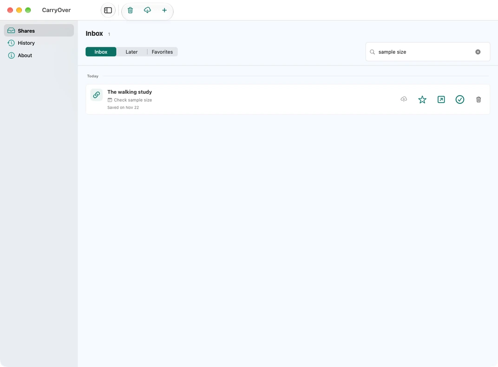
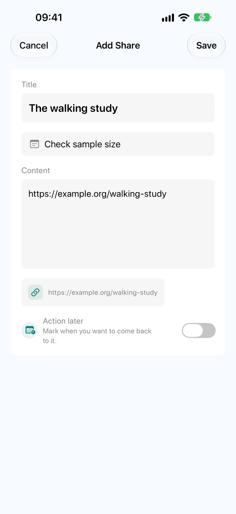
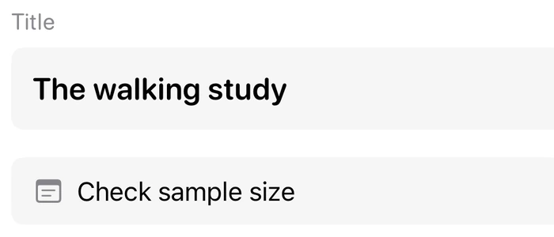
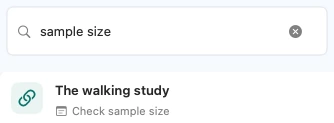

A post during your commute
Share a useful post from a compatible social app. Open its source on Mac when you are ready to check the details.
Save what caught your eye on iPhone or iPad. Jot down why, then find it by that note when you’re back at your Mac.
Get CarryOver for iPhone, iPad and Mac on the App Store.


iPhoneiPadMac
Save links, posts and ideas from the Share menu
Add “Check sample size” to the walking study, or leave the note blank.

Search “sample size” on Mac. The matching note points back to the study, even if you forget its title.

Pick up on Mac with the links, quotes and images you saved on iPhone or iPad. If you forget a title, search for the source domain, a phrase you saved or the note you left yourself.
Share a useful post from a compatible social app. Open its source on Mac when you are ready to check the details.
Save a link, a passage or a photo from the share sheet on iPhone or iPad. Add a line like “check the sample size” so that when you open CarryOver on Mac, you know why you kept it.
Add a note manually after a conversation. Set a reminder, pick it up later and mark it done when you have followed through.
Use the system Share menu in apps that share supported text, links or images. You can also add a note manually in CarryOver.
Unfinished items stay in your inbox regardless of age. Favorite important finds, then mark them done when you have handled them.
Search the source domain, a phrase from the shared text, a personal note or a topic in the inbox or History.
Completed items move to History. Restore an item to the inbox when you need to pick it up again.
Set a date and time and allow system notifications. Tap the reminder to open the saved item and continue.
iCloud sync connects iPhone, iPad and Mac signed in to the same Apple Account. Network and iCloud conditions can delay syncing.
Keep your notes and topic alongside the original. Open the source to check a detail, then mark the item done when you finish. To use it in your writing, export that item’s source and notes as a Markdown file.
It saves the text, links or images that the source app actually shares. A social post may be shared as a link rather than its full content. Opening a link may require internet access or a login.
Items are saved locally first. Cross-device sync needs the same Apple Account, iCloud enabled and an internet connection. Check the sync status and retry if needed; syncing is not guaranteed to be immediate.
Search the source domain, a phrase from the shared text, a personal note or a topic in the inbox or History. Open the result to check its source; opening it doesn’t mark it done.
For supported public HTTPS articles, you can save a plain-text copy to read offline on this device. Article copies stay on the device where you create them. Item details › More actions › Create article copy
The current version has no daily save limit and does not require a separate Pro upgrade. Check the App Store for availability and pricing in your region. Read help